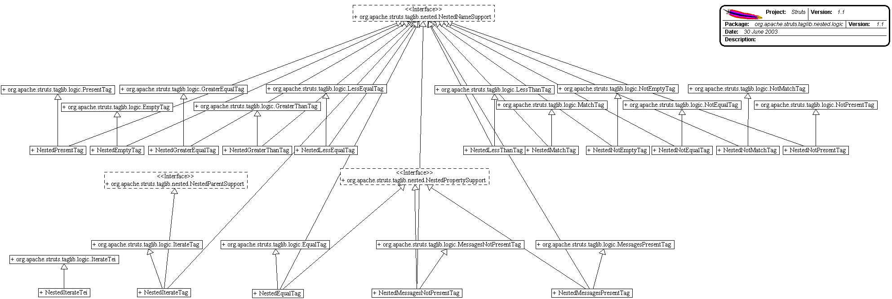
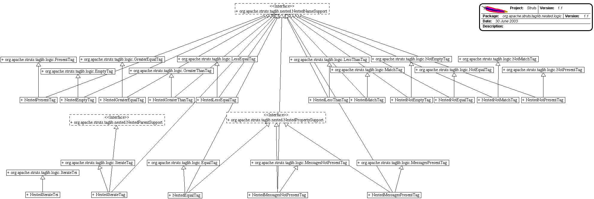

Package org.apache.struts.taglib.nested.logic
The nested html tags extend the

org.apache.struts.taglib.logic
tags to allow them to relate to each other in a nested nature. The fundamental
logic of the logic tags don't change, except in that all references to
beans and bean properties will be managed in a nested context.
-
Class Summary Class Description NestedEmptyTag NestedEmptyTag.NestedEqualTag NestedEqualTag.NestedGreaterEqualTag NestedGreaterEqualTag.NestedGreaterThanTag NestedGreaterThanTag.NestedIterateTag NestedIterateTag.NestedIterateTei NestedIterateTei Extending the original tag's tei class, so that we can make the "id" attribute optional, so that those who want to script can add it if they need it otherwise we can maintain the nice lean tag markup.NestedLessEqualTag NestedLessEqualTag.NestedLessThanTag NestedLessThanTag.NestedMatchTag NestedMatchTag.NestedMessagesNotPresentTag NestedMessagesNotPresentTag.NestedMessagesPresentTag NestedMessagesPresentTag.NestedNotEmptyTag NestedNotEmptyTag.NestedNotEqualTag NestedNotEqualTag.NestedNotMatchTag NestedNotMatchTag.NestedNotPresentTag NestedNotPresentTag.NestedPresentTag NestedPresentTag.